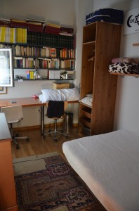
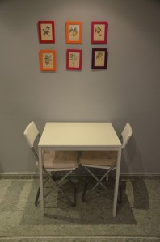

Je to více než ostudné – od dovolené uběhly už dva měsíce a mně tu pořád visí poslední rozepsaný článek. Abych tedy kapitolu „Barcelona“ konečně uzavřela, povyprávím vám dnes o Barri Gótic, historické části Barcelony plné tradiční architektury a krásných bazilik.
My jsme své putování zahájili u nádherně zdobené secesní budovy Palau de la Música Catalana, která představuje koncertní sál, kde kromě hudby můžete obdivovat také neobyčejnou architekturu.
Barri Gótic je unikátní také spoustou křivolakých uliček plných různorodých obchůdků a krámků s jedinečnou atmosférou. Skvostem je i katedrála na Placa del Rei.
Jedním z největších turistických lákadel v Gotické čtvrti je samozřejmě také Picassovo muzeum, které jsme ovšem tentokrát vynechali. Minout jsme ovšem nemohli místo, kde se „stará“ Barcelona setkává s tou novodobou, nejrušnější barcelonské náměstí Placa Catalunya. Jedná se zároveň o nejrušnější dopravní křižovatku a výchozí bod, odkud můžete zahájit nákupní horečku – krom obchodních domů věhlasných značek na ni navazuje La Rambla. Na to my jsme ovšem neměli čas :D!
Protože jsme si chtěli z Barcelony odvézt i nějaký hezký suvenýr do bytu, vydali jsme se poslední den naší dovolené na burzu obrazů, která se odehrávala nedaleko Rambly za kostelem Santa Maria del Pi. Z atmosféry této akce jsme byli naprosto nadšení a nakonec jsme si vybrali dva obrázky od sympatického malíře, který se s námi nechal i vyfotografovat :D! Byl velice komunikativní, ale bohužel jsme mu moc nerozuměli :D. I tak to byl pro nás ohromný zážitek a z našich „úlovků“ jsme měli velikou radost.
A protože jsme byli v Barceloně poslední den a ještě jsme neviděli moře, rozhodli jsme se tento nedostatek napravit a jít si aspoň vyráchat nožky. Pláž v Barceloně je neskutečně přeplněná, přesně jak se o ní říká, ale musím říct, že moře mi přišlo celkem čisté a navíc jsem tam našla v písku krásnou mušli :-).
Když na to teď vzpomínám a za oknem to vypadá přinejlepším na babí léto, mám hroznou chuť vrátit se zpátky… Letos už to bohužel asi nestihneme, ale už teď můžu říct, že jsem si Katalánsko hrozně zamilovala a ráda se tam zase někdy podívám. Snad vás série článků o tomto krásném koutě země také nalákala k návštěvě…
K zážitkům z dovolené se hodí zmínit i něco málo o ubytování. Letos jsme se poprvé rozhodli vyzkoušet něco nového, a sice Airbnb. Jedná se o americkou službu, která zprostředkovává ubytování v soukromí. Můžete si tak pronajmout celý byt třeba i s kuchyňkou a často vás to vyjde dokonce i levněji než hotel – záleží však samozřejmě na konkrétní destinaci i vašich požadavcích. Vzhledem k tomu, že mám ke všem alternativnějším způsobům cestování dost nedůvěru, nebyla jsem o Airbnb zpočátku tak úplně přesvědčená, přestože jsem na ně slyšela jen chválu. Zkusit se má ale všechno a navíc jsme si chtěli na dovolené hodně vařit z čerstvých surovin, a tak jsme se rozhodli zarezervovat tři byty s kuchyňkou.
První ubytování jsme si našli u paní Pilar v Gironě. Jednalo se pouze o jednu noc, a tak nám bylo celkem jedno, kde přespíme. Byt paní Pilar se nacházel nedaleko nádraží, což pro nás byla ideální lokalita. Pilar byla jednoduše skvělá :-)! Dorazili jsme někdy v deset večer, byli jsme očekáváni a byteček vypadal prima. Pilar obývala spodní patro a naše ložnice i koupelna byly v tom horním. Ještě večer jsme se dozvěděli spoustu informací o Gironě, dostali k zapůjčení mapku města a jako bonus pár tipů, co bychom měli navštívit nebo kde bychom se mohli najíst. Ložnice byla malá, ale bylo v ní všechno, co jsme mohli potřebovat, připojení k internetu fungovalo bez problémů a na druhý den jsme navíc mohli zůstat tak dlouho, jak jsme chtěli, protože Pilar další hosty neměla.
V bohaté knihovně paní Pilar najdete i Milana Kunderu ;-)
Naladěni touto příjemnou zkušeností jsme se těšili na byt číslo 2 v Blanes. Tady nás měla ubytovat paní Chiara. Byt jsme opět celkem bez problémů našli, ale když jsme zazvonili, nikdo nám neotvíral :(. Vzhledem k tomu, že dům se nacházel v docela prudkém kopci a měli jsme s sebou dva kufry, nebylo moc příjemné postávat na ulici. Na naše zvonění nám posléze přišel otevřít Chiařin soused, sympatický pán, který se nám snažil pomoct a dal nám telefon na manžela Chiary, který pracoval v restauraci na pláži. Nakonec se nám podařilo spojit přímo s Chiarou a museli jsme si pro klíče od bytu dojít za jejím manželem. Kufry jsme se rozhodli nechat u souseda – byť sympatického, ale naprosto cizího člověka. Nakonec však všechno dobře dopadlo a z bytečku jsme byli hrozně nadšení :-)!
Ubytování u Chiary
Byl opravdu krásný, útulný a výborně vybavený. Hlavně kuchyňka byla perfektní. Nádobí tam sice bylo poskrovnu, ale toustovač a kávovar i s kávou se docela hodily, stejně jako pár základních surovin k vaření ;-). V bytě se mi také moc líbilo několik hezkých dekoračních detailů, kterými se rozhodně nechám inspirovat i u nás doma. Celkově hodnotím bydlení v Blanes jako jednoznačně nejlepší z celého pobytu.
Nože zapíchnuté v misce s rýžíObrázky ze starých knížek + barevné rámečky z IKEA = dekorace za pár kaček
Po ne zcela stoprocentní druhé zkušenosti jsem z bydlení v Barceloně měla už předem obavy (které se posléze ukázaly být oprávněné 8-)…). Přecejen jsme tu měli strávit 7 dní, nejdelší časový úsek. Byt pronajímala nějaká Ruska jménem Ksenia – ta nám ale pár dnů dopředu psala, že v době našeho příjezdu v Barceloně nebude a klíče nám nechá ve schránce v domě. Zpočátku šlo všechno celkem hladce – klíče jsme našli, byt v podkroví také, ale na první pohled to tedy nebyla žádná sláva. Oproti fotkám na Airbnb působilo všechno vybavení dost ošuntěle a špinavě. Miniaturní koupelna se sprchovým koutem vypadala taky dost nechutně, ale když jsem v kuchyni otevřela šuplíky, čímž jsem vyrušila nějaké milé černé broučky, veškerá sranda skončila.
S nepoužitelnou kuchyňkou bychom se asi byli schopní ještě jakž takž smířit – z večerní procházky k nedalekému chrámu Sagrada Familia jsme si přinesli flašku vína a byli jsme rozhodnutí opít se a brouky ignorovat. Bohužel jsme v noci zjistili, že broučci vylézají i ze spár v koupelně a tento fakt nemohlo utlumit ani (mimochodem pěkně hnusné) španělské víno. Abych story zkrátila – rozhodli jsme se rezervaci zrušit a hned na druhý den se přestěhovat jinam. Ksenia s námi do té doby jakžtakž komunikovala přes Whatsup, poté se ale odmlčela a už jsme od ní nedostali prakticky žádné zprávy. Kontaktovali jsme také Airbnb, ale reakce jsme se nedočkali. Začali jsme tedy ještě v noci shánět jinou střechu nad hlavou. Zachránil nás ubytovací komplex Super Tetuan, který se nacházel hned za rohem. Finančně vyšel dokonce ještě výhodněji než naše současné ubytování u Ksenie, takže jsme se dlouho nerozmýšleli a zarezervovali si pokoj.
Po zkušenosti z bytu Ksenie jsme byli ochotní vzít cokoliv, kde bude čisto. Tetuan nás ale naprosto ohromil – asi tam nahoře dostali pokyn vynahradit nám příkoří z předchozí noci :-D. Dostali jsme krásný prostorný pokoj s balkonem – zařízený velmi jednoduše, ale vkusně. Překrásný secesní interiér domu a stylový výtah můžete zhodnotit na fotkách. Kuchyně i několik koupelen byly společné pro několik pokojů, ale všude bylo čisto a hlavně žádní brouci :D! Byli jsme prostě nadšení.
Výtah, co už se jen tak nevidíJako z filmu :)
Asi vás bude zajímat vyústění celého příběhu. Po několika urgencích na Airbnb už jsme byli smířeni s tím, že Ksenia se nám nikdy neozve a peníze za ubytování samozřejmě už taky nikdy neuvidíme. Po návratu z dovolené jsme si začali stěžovat na Airbnb Twitteru a situace se najednou dala do pohybu. Cca po měsíci jsme měli celou sumu (včetně manipulačního poplatku Airbnb) zpátky na účtu a k tomu kredit nějakých 6000Kč jako omluvu za dlouhé čekání. Airbnb toho má teď přes léto prý prostě moc…
Nakonec tedy všechno dobře dopadlo. I tak si ale myslím, že služba, která se ohání „prvotřídním zákaznickým servisem“ (cituji z jejich webu) by měla vědět, že v hlavní sezóně dovolených je potřeba posílit stavy. Z Airbnb mám proto trochu smíšené pocity. Může to být velmi v pohodě a můžete si to stoprocentně užít. Zároveň se ale může stát, že něco v pohodě nebude a vy pak budete muset ve čtyři ráno řešit, kde sehnat nové ubytování. Airbnb vám s tím bohužel nepomůže. Nás nechali dlouho v nejistotě a ozvali se ve chvíli, kdy už jsme v to prostě vůbec nedoufali. Právě proto, že jsme zažili obě zkušenosti – jak pozitivní, tak negativní, nebudu tvrdit, že už Airbnb nikdy nevyzkouším. Ale pokud budu mít možnost se za stejné peníze ubytovat v hotelu, vyberu si radši hotel.
Co vy a Airbnb? Máte s nimi nějakou (lepší) zkušenost :)? Můžete se podělit v komentářích…
Když jsem přiletěla do Alicante, jako první mě do očí udeřilo to, že krajina je tu strašně pustá a vyprahlá, nikde ani strom, natož kousek trávy. Girona mě proto později velmi překvapila tou spoustou zeleně. Co se však flóry týče, jednoznačným vítězem soutěže se stalo Blanes se svou překrásnou botanickou zahradou Mar i Murtra.
Naleznete zde snad všechny možné druhy rostlin – všechno to, co doma horko těžko pěstujete a pipláte v malé velikosti, tady divoce bují a zelená se :-).
Botanická zahrada leží na pobřeží – přímo na skále nad mořem – a tak je odsud také překrásný výhled na skryté pláže v zálivu s průzračně čistou vodou.
V Mar i Murtra naleznete tematické části s rostlinami různých geografických oblastí i stinná místa s lavičkami, kde můžete odpočívat a kochat se. Některá prostranství jsou pojmenovaná po slavných botanicích, a tak se nedivte, až zjistíte, že v Blanes mají taky takový malý „Mendlák“ :D…
Z Blanes se teď přesuneme do Barcelony a překrásného parku Ciutadella, který je nejstarším městským parkem v Barceloně. Nachází se na severovýchodě města, kde navazuje na nejstarší zástavbu gotické čtvrti (Barri Gòtic – o té více později). Jeho jméno odkazuje na pevnost, kterou zde nechal postavit roku 1714 král Filip V. Poté, co byla pevnost v roce 1848 stržena, bylo rozhodnuto zde vytvořit první veřejně přístupný park. V roce 1888 se park stal dějištěm Světové výstavy, pro kterou zde bylo postaveno několik budov. Středem parku je jezírko a obrovská kašna s mnoha alegorickými postavami. Uvnitř je grota, která je raným dílem Antoni Gaudího. Část parku slouží od roku 1892 jako zoologická zahrada.
Na zoologickou zahradu už jsme bohužel neměli čas, pokud však toužíte vidět v Barceloně nějaká zvířátka, rozhodně byste neměli vynechat návštěvu slavného Aquaria. Vstupné je sice poměrně drahé, ale stojí to za to a pokud vám právě nepřeje počasí, v Aquariu se dá bez problémů strávit celé odpoledne :-).
Aquarium bylo otevřeno roku 1995 a je největším akváriem v Evropě s více než 11 tisíci živočichů. Nejzajímavější atrakcí je podvodní tunel, kterým projíždíte na pohyblivém pásu a můžete tak sledovat život pod hladinou (včetně několika žraloků) opravdu zblízka.
Najdete tu na 450 různých živočišných druhů – možná i takové, o kterých jste v životě neslyšeli, třeba legrační „Moon fish“, která má opravdu kuriozní zjev. Asi ji na obrázcích níže snadno poznáte :-)…
A když se z hlubin moře vynoříme zase nahoru, k vyprávění už nám toho moc nezbývá. Poslední místo, které navštívíme, bude stará gotická čtvrť a pláž v Barcelonetě ;-)…
Velmi se kaju, že tento článek píšu až teď, ale znáte to… Protože mám ovšem povídavou, na řadu dnes přichází všechny ty slavné barcelonské ikony. Ani nevím, kterou začít dřív :-)!
Sagrada Familia
Chrám, jehož stavba ještě dlouho nebude dokončena (i když se snad plánuje finiš na rok 2020, ale když si představím, kolik se toho má ještě dostavět, připadá mi to nereálné). Už teď je však bezpochyby nejslavnějším symbolem Barcelony.
Gaudí převzal řízení stavby v roce 1883 a dohlížel na ni téměř 40 let, až do své smrti v roce 1926. Definitivní projekt stavby neexistuje, sám Gaudí prý hodně improvizoval :-). Přímo dovnitř jsme nešli – platit za návštěvu kostela se nám zdálo fakt nekřesťanské 😀 – ale krypta, kde je Gaudí pohřben, je naštěstí volně přístupná.
Gaudího mistrovské dílo na objednávku textilního průmyslníka Josepa Batllóa je fascinující svou barevností, křivkami i šupinovitou fasádou. Interiér domu prý rovněž stojí za vidění.
Nedaleko Casa Batlló, přímo na Passeig de Grácia se nachází další Gaudího klenot – Casa Milá, zvaná též La Pedrera. U té nám však štěstí nepřálo, protože se momentálně rekonstruuje, a tak jsme slavnou vlnovitou kamennou fasádu zahlédli jen přes lešení.
Park Güell
DoGüellu jsme se těšili asi úplně nejvíc, všichni nám říkali, že ten rozhodně nesmíme vynechat, už kvůli tomu překrásnému výhledu na Barcelonu. Lákadel ale bylo samozřejmě víc, třeba slavná pestrobarevná „salamandra“, kterou jsme si v malé velikosti odvezli domů jako suvenýr :-).
Park Güell byl zařazen na seznam světových kulturních památek UNESCO a je to opravdu asi to nejlepší, co můžete v Barceloně vidět. Na počátku minulého století byl Gaudí osloven bohatým průmyslníkem Güellem, aby na ploše dnešního parku vytvořil do přírody zasazené sídliště. Protože však město Barcelona projekt neschválilo, zůstalo jen u parku.
Nejnápadnějším rysem parku, pominu-li vstupní prostory, je pestrobarevná dlouhá lavice zdobená barevnými keramickými střepy. Gaudí a jeho kolegové si obstarávali u keramických firem levné kazové zboží a barevné úlomky a střepy pak využívali jako stylovou dekoraci. K parku patří také Gaudího dům a muzeum, kde mistr mnoho let žil a pracoval.
U mozaiky ještě chvíli zůstaneme, přestože tato už není Gaudího dílem. Při naší cestě z Montserrat jsme se zastavili v parku Miró, který se nachází nedaleko Placa Espanya. Jak už jeho název napovídá, dominantou parku se stala 22 metrů vysoká socha Joana Miróa „Dona i ocell“. Park je ale výjimečný i tím, že v něm naleznete výhradně palmový porost a je to rozhodně příjemné místo k odpočinku po náročném dni.
Doufám, že se vám dnešní procházka po nejzajímavějších místech Barcelony líbila a přijmete mé pozvání do katalánských parků a zahrad – zase někdy příště :-).
V Barceloně jsem byla poprvé v roce 1994, pouhé dva roky po olympiádě. Z toho si však, vzhledem k mému tehdejšímu věku, pamatuju jen Kryštofa Kolumba a pouliční umělce na Ramble :-). Přestože nejsem velký sportovní fanoušek, návštěvu olympijského parku na hoře Montjuic jsem tentokrát, o celých dvacet let později, vynechat nechtěla.
Poprvé jsme se k této části Barcelony přiblížili už při návratu z Montserratu, odkud jsme přijeli vlakem na Placa Espanya a rozhodli se vydat do nedalekého parku Miró.
Jakmile jsme vylezli z metra, ocitli jsme se na širokém prostranství s hlavní dominantou – překrásnou kaskádovitou fontánou.
Že v noci krásně zpívá a svítí, to už jsem věděla od Pavči z videa, které kdysi dávala na Facebook. Ale teprve teď, když jsem tam stála, jsem si uvědomila, že celé tohle místo přece už dávno dobře znám… odkud asi :-)! Těžko pro něj mohli vybrat lepší název než Fontana Magica…
A tak jsem si po návštěvě Dakota House a Abbey Road nečekaně připsala na seznam splněných snů další místo s úžasnou atmosférou a hudební historií. Hned na druhý den jsme se k fontáně vrátili a tentokrát už jsme pokračovali až nahoru k Národnímu muzeu katalánského umění, odkud si opět můžete užít jeden z překrásných výhledů na město.
Montjuic mě samotnou překvapil především svými překrásnými udržovanými parky, kde o turistu nezakopnete. Je to asi hlavně proto, že tato část Barcelony už je lehce z ruky a hlavně na kopci. Jak jsme zjistili, Španělé asi na pěší výšlapy moc nebudou, protože kde se dalo a bylo to do kopce, všude se nacházely eskalátory – ano, skutečně i v parcích nebo třeba v ulici vedoucí do parku Güel :D!
Olympijské stadiony a sportoviště vypadají i dvacet let po olympiádě v dobrém stavu. Ten hlavní Estadi Olímpic de Montjuïc je dokonce volně přístupný. Bylo to právě zde, kde proběhla otevírací ceremonie v roce 1992 a dodnes si můžete všimnout místa, kde tehdy zaplápolal olympijský oheň :-).
Pro dobré zabezpečení přenosů z olympiády byla v Olympijském parku Montjuïc postavena působivá 136 metrů vysoká Telecommunications Tower.
Kousek od stadionu vede „chodník slávy“, kde najdete nejedno slavné jméno ze světa sportu, dokonce i z českých luhů a hájů ;-)!
A když vás olympijská atmosféra unaví, můžete se přesunout do některého z mnoha přilehlých parků, usednout do stínu stromů a přemýšlet, kam se vydat dál. My měli před sebou úplně poslední barcelonský den a tak jsme měli jasno… ale na loučení je zatím čas, je toho ještě tolik co vyprávět :-)!
Na našich červnových cestách jsme navštívili celou řadu zajímavých míst. Ta „top“ bych vám dnes ráda představila. A dopředu předesílám, že tentokrát to ještě nebude o Gaudím a jeho stavbách – ty si určitě zaslouží samostatný článek :-).
Girona
Girona nás opravdu příjemné překvapila. Nečekali jsme od ní mnoho – většina turistů, která přilétá na Costa Brava, ji bez zájmu míjí. Je to poměrně malé městečko, avšak s překvapivě krásným historickým centrem.
Za návštěvu rozhodně stojí náměstí se sochou Gironského lva, ke které se váže poněkud kuriozní pověst – pokud lvíčkovi políbíte zadek, jednoho dne se do Girony zase vrátíte :D.
Ideální pro procházku je také bývalá židovská čtvrť El Call plná úzkých spletitých uliček.
A co rozhodně nesmíte vynechat, to jsou starobylé městské hradby, které obkružují historické centrum. Přístup na ně je volný a nabízí opravdu překrásný výhled na celé město i přilehlé okolí.
Na Placa de la Catedral pak najdete dominantní gotickou katedrálu, která vznikla někdy mezi 14. a 16. stoletím.
Montserrat
Pokud už se vydáte do Barcelony, určitě stojí zato udělat si malý výlet na nejvýznamnější poutní místo Katalánska – klášter Montserrat. Z Barcelony můžete jet vlakem, který vás doveze až k dolní stanici lanovky. Nahoru do skal pak jedete malou žlutou kabinkou s nosností asi 35 osob. Pokud netrpíte závratí, užijete si překrásný rozhled do okolí.
Ve výšce 750 metrů pak naleznete rozlehlý klášterní komplex ležící uprostřed horského masivu. Benediktinský klášter zde byl založen v 9. století. Během své historie byl několikrát téměř zničen a velká rekonstrukce zde proběhla v polovině 19. století.
Cílem poutníků je černá Madona, která se stala oficiální patronkou Katalánska. Stojí se na ni oooobrovská fronta snad v kteroukoliv denní hodinu. My se na ni proto podívali pouze z dálky (nachází se v chrámu nahoře nad oltářem) – k naší velké radosti se ji Péťovi podařilo na foťák krásně nazůmovat :D!
Montserrat je vyhledáván i horolezci či pěšími turisty – pokud vám zbude dost sil, můžete se vydat na cca půlhodinovou procházku na vyhlídku, odkud si můžete celý klášterní komplex prohlédnout či vyfotografovat.
A pokud máte žízeň, nezapomeňte si načepovat vodu do zásoby – v Montserrat teče z kohoutků jedna z nejčistších vod široko daleko (ta v Barceloně není pitná)!
Blanes
Pokud se rozhodnete navštívit Costa Brava a prožít dovolenou ve stylu „moře, váleníčko na pláži a dobré jídlo“, Blanes je podle mě ta nejlepší možná volba.
Během naší cesty na jih do Barcelony jsme si mohli z okna prohlédnout ostatní letoviska na pobřeží a žádné se nám na pohled nelíbilo tolik jako právě Blanes. Průzračně modré moře, asi nejkrásnější, jaké jsem ve svém životě viděla, rozeklané útesy a spousta zeleně…
Pláže zde nejsou obsypané turisty jako třeba v Barceloně, a přestože moře je dost studené, koupání v něm určitě neodoláte. Ceny v restauracích tu nejsou tak příznivé jako v Alicante, ale výborně nakoupíte na již zmiňovaných tržnicích. A co se nám na Blanes líbilo především – máte tu i spoustu jiných možností než se jen válet na pláži. Krom historického jádra si můžete prohlédnout dominantní zříceninu hradu San Juan. Při výstupu si máknete, ale úžasný výhled je zaručen.
Hezkým tipem na výlet je také návštěva botanické zahrady Mar i Murtra, kde naleznete snad všechny možné druhy rostlin. O tom ale napíšu více v samostatném článku :-).
A konečně katalánská metropole, která nabízí tolik zajímavých míst k návštěvě, že nevíte, které si vybrat dřív. Opomenu-li tedy místa spojená s Gaudím, ke kterým se vrátím v samostatném článku, začnu s památkou, u které jsme naše toulání po Barceloně zahájili i my – a sice Vítězný oblouk. Nenechte se zmást, neupomíná na žádné slavné vítězství – byl postaven jako vstupní brána pro mezinárodní výstavu v roce 1888. Na první pohled upoutá obložením z červených cihel, které evokuje inspiraci arabskou architekturou.
Co se prý v Barceloně nesmí vynechat, to je proslulá promenáda La Rambla. Na mě však byla příliš přeplněná a sama o sobě mě moc nezaujala. Když už po ní ale půjdete, určitě se vyplatí udělat si tu a tam malou odbočku – třeba na zmiňovaný trh La Boquería nebo na rušné historické náměstí Placa Reial. Na samém konci Rambly (u pobřeží) naleznete slavný památník na počest Kryštofa Kolumba, který vyplul z barcelonského přístavu za objevením Ameriky.
Co bych doporučila si v Barceloně raději odpustit je návštěva nechvalně proslulé čtvrti El Raval (tzv. „temná čtvrť“), která se nachází nedaleko Rambly. Mísí se tu různá etnika, což poznáte na první pohled. El Raval žije především nočním životem, ale i ve dne tady narazíte na nejednu lehkou děvu nebo pochybná individua honící se s kuchyňským nožem po ulici (true story). Ještě fotku s tlustým Ravalským kocourem od kolumbijského výtvarníka Fernanda Boterose a rychle pryč!
Tuhle kapitolu jsem si chtěla nechat jako to nejlepší na konec a je mi jasný, že vás asi budou zajímat víc památky, než moje hladové okénko, ale prostě jsem nemohla odolat O:-). Do španělské kuchyně jsem se zamilovala už v Alicante a na naší dovolené jsme měli tu nejlepší příležitost vyzkoušet spoustu dalších dobrot.
Na úvod musím zmínit, že všechna ubytování, která jsme si zarezervovali, měla kuchyňku. Od začátku jsme plánovali, že si budeme hodně vařit z lokálních surovin. A díky všudypřítomným trhům to bylo nejen chutné, ale taky neuvěřitelně levné řešení. Nejvíc nadšená jsem byla jednoznačně z tržnice v Blanes, která se nacházela malý kousek od našeho apartmánu. Prodávali tam nejen krásnou zeleninu, ale i maso, ryby a všelijaké jiné mořské potvory nebo sýry. Z toho všeho jsme si pak dělali báječné obědy či večeře :-)…
Za velké gastronomické zklamání však musím označit španělské víno. Už v Alicante nám přišlo naprosto odporný, ale utěšovaly jsme se s Marťou tím, že na nás na konferenci šetřili nějakým krabicákem :D. Bohužel ani lahvová vína z obchodu, která jsme vyzkoušeli, nebyla o moc lepší. Všechna do jednoho strašně kyselá se zárukou pálení žáhy. Zato mě velice překvapilo španělské pivo, které špatné rozhodně nebylo! V Barceloně jsme pak narazili na jeden čínský obchůdek, kde jsme sehnali vynikající pivo zázvorové :-)!
A když už jsme u těch nápojů, rozhodně nemůžu nezmínit báječné a osvěžující ovocné šťávy, které jsme si kupovali na trhu La Boqueria v Barceloně. Nejen že byly vynikající, ale když jste na trh přišli před zavírací dobou, mohli jste je sehnat za bezkonkurenční cenu – my jsme takto byli obdarováni rovnou třemi kelímky za neuvěřitelné 1 euro :-)!!
Co jsme si opravdu užívali, to bylo čerstvé ovoce. Ochutnali jsme všechno možné – od žlutých melounů přes višně až po nektarinky. Snídaně pak vždycky stály zato…
A když se nám zrovna vařit nechtělo, samozřejmě jsme si i zašli na něco dobrého do restaurace. Poprvé jsem ochutnala proslulou studenou polévku gazpacho, která nás během parného dne v Gironě příjemné osvěžila. Zašli jsme si i na tapas a ochutnali barcelonskou paellu s mořskými plody. A jako sladká tečka… správně, zmrzlinka O:-)!
Konečně jsem našla špetku času, abych rozjela sérii vyprávění o naší letošní dovolené. Zatím jsem se vždycky snažila vyprávět naše příběhy den po dni, pro tentokrát jsem se ovšem rozhodla zaměřit články spíše tematicky. Třeba to tak pro vás bude přehlednější a přinese to osvěžující změnu :-).
Dnešní článek bych tedy ráda věnovala tématu cestování. Jak už asi víte, cílem naší letošní dovolené se stala Barcelona, ale rozhodli jsme se navštívit také Gironu a Blanes. Bylo tedy jasné, že se budeme tentokrát trochu víc přemisťovat a museli jsme se rozhodnout, v jakém pořadí jaké místo navštívíme. Jako nejrozumnější řešení se nám nakonec jevila trasa Girona->Blanes->Barcelona.
I přes mé dobré předsevzetí bojkotovat Ryanair jsme nakonec opět letěli s nimi. Výhodným letenkám za 2500 a navíc v super termínu se prostě nedalo odolat O:-). Letět jsme sice museli z Bratislavy, ale to nebyl žádný problém a klidně bych tak letěla zas. Letiště v Bratislavě je hezké, moderní a velice přehledné. Cesta do Girony utekla rychle – počasí bylo báječné a navíc jsme vychytali sedadlo u okýnka. Girona nás přivítala deštíčkem, ale s tím jsme podle předpovědi počítali. Naší hlavní starostí po příletu bylo, jak se dostaneme do města – letiště je totiž od centra ještě celkem vzdálené. Naštěstí tu funguje síť autobusů Barcelona Bus, která odváží turisty jak do Barcelony, tak do Girony, kam vás cesta vyjde asi na 2,50 EUR.
Cestování z Girony do Blanes už bylo komplikovanější. Jednak na vás na nádražních informacích anglicky nepromluví 😀 a jízdní řády mají umístěny neznámo kde. Jako dopravní prostředek jsme zvolili bus a prostě jsme se vždycky nahrnuli k odjíždějícímu autobusu, který vypadal, že by mohl jet našim směrem, a zeptali se řidiče, jestli jede přes Blanes (mimochodem se název tohoto města vyslovuje přesně tak, jak se to píše, což pro nás bylo trochu matoucí :-). Asi po hodině čekání přijel konečně ten správný spoj, který nás odvezl až do Blanes. Cesta trvala přibližně hodinu a půl a za jednu jízdenku jsme dali okolo 6 EUR. Autobus byl pohodlný a čistý, ale to jejich libování si v klimatizaci mě přivádělo k šílenství.
Oproti tomu cesta z Blanes do Barcelony proběhla překvapivě hladce. Tentokrát jsme se rozhodli vyzkoušet španělské dráhy :-). Jízdenka byla levná a dala se koupit v automatu kartou. A hlavně ten luxusní vláček! Trať navíc vede přímo po pobřeží, takže skoro celou cestu si můžete užívat nádherný výhled na moře a pláže. Je pravda, že jsme jeli skoro dvě hodiny, ale nikam jsme nespěchali a moc jsme si to užili.
A nyní už pár slov k barcelonskému metru :-). Dá se říct, že žádným směrem nevybočuje ze standardu ostatních evropských metropolí – je vcelku čisté, má hustou síť, ale značení je barevně odlišené a proto i poměrně přehledné. Menší problém jsme měli jen s hledáním přestupu na vlakové spoje do Montserrat, kam jsme jeli na výlet, ale ani tehdy jsme moc dlouho nebloudili.
Vlakové soupravy se vyskytují v různé kvalitě – najdete tam jak ty omšelé zastaralé, tak i hezké moderní. Všechny vás však spolehlivě a hlavně rychle dopraví tam, kam zrovna potřebujete. Snad jen jediným opravdu velkým vopruzem na barcelonském metru byly přestupy na některých stanicích, které se zdály nekonečné. Dlouhý tunel bez urychlovacích pásů nám aspoň pravidelně zpříjemňovali místní umělci :-). A když už jsme u toho metra, rozhodně musím zmínit možnost koupit si cenově výhodnou jízdenku T10 (jak již název napovídá – na 10 jízd), která je přenosná, takže nám s Péťou vždy stačila jen jedna. Pokud budete metro hodně využívat, dost na tom i ušetříte (T10 stojí okolo 10 EUR).
Když už tady vzpomínám všechny možné dopravní prostředky, nesmím opomenout ani lanovku, kterou jsme se nechali vyvést do kláštera Montserrat, který leží ve skalách asi 60 km za Barcelonou. Rovnou ale taky upozorňuju, že kdo trpí závratí, měl by si radši koupit lístek na zubačku :D!
Cesta z Barcelony na letiště v Gironě už byla úplně v pohodě. Lístky se dají koupit dopředu na nádraží. Báli jsme se, že budou autobusy strašně nacpané, tak jsme radši jeli o hodinu dřív a sedli jsme si bez problémů. Ani ne za dvě hodiny už jsme stáli v Gironě v odbavovací hale. Gironské letiště je celkem malé a lítají z něj, co jsem tak vypozorovala, hlavně nízkonákladovky. Musím přiznat, že zpáteční let byl asi vůbec nejhorší, jaký pamatuju – obrovská oblačnost nad Bratislavou dost znepříjemnila závěrečné klesání. Naštěstí jsme to zvládli a chvilku poté, co jsme doletěli, se spustila obrovská průtrž mračen, za které by bylo přistání jistě ještě mnohem horší. No, na letošek mám myslím už dolítáno :-).
Doufám, že vám článek přinesl nějaké užitečné informace a příště už se rozhodně vrhneme na něco zábavnějšího :-)!
Moje první opravdová služební cesta vedla rovnou ke břehům Středozemního moře, do Alicante na jihu Španělska, kde sídlí Úřad pro harmonizaci vnitřního trhu (OHIM). Ten také zaštiťoval celou konferenci o mediaci v oblasti práv duševního vlastnictví, které jsme se spolu s kolegyní Marťou zúčastnily. Detaily z konference vás tu nehodlám zatěžovat, takže vám rovnou ukážu nějaké ty fotky z naší cesty :-).
Letecké spojení není bohužel úplně ideální, takže jsme kvůli příletu musely odjíždět z Brna ve 3 ráno a kvůli odletu jsme pro změnu musely strávit noc na vídeňském letišti. Obě cesty jsme také absolvovaly s přestupem, nejprve v Madridu a na zpáteční cestě na Mallorce. Vzhledem k tomu, že si v létání nijak zvlášť nelibuju, brala jsem to jako nutné zlo, ale lety utekly celkem rychle a bez komplikací.
Do Alicante jsme dorazily ve středu po obědě, a protože konference začínala až následující den, měly jsme celý zbytek dne pro sebe. Vyhladovělé po cestě jsme se nejprve vydaly hledat něco k snědku. Na promenádě za hotelem jsme zapluly do jedné z prvních restaurací a za neuvěřitelných 8 euro se přecpaly 4 chodového menu :D. Cheescake, který nám donesli úplně na závěr, jsem už naprosto neměla kam dát, ale byl tak úžasný, že jsem prostě neodolala. Konečně jsem také ochutnala španělskou paellu.
Přestože to záhy poté vypadalo tak, že zapadneme do hotelu a dáme si šlofíka, nakonec jsme se s Marťou hecly a šly jsme si vyráchat nožky do moře. Na můj vkus bylo strašně studené, takže jsem prohlásila, že do něj v žádném případě celá nevlezu… za dva dny jsem změnila názor :D.
Moře tedy zklamalo, a tak jsme vyrazily zkusit další alicantské lákadlo – monumentální Castillo de Santa Bárbara, pevnost tyčící se přímo nad našim hotelem. Krom spousty kešek po cestě nabízí taky překrásný výhled na město. Musím říct, že na první pohled se mi Alicante moc nelíbilo – působí strašně vyprahle, není tam žádná zeleň, ale jakmile zabloudíte do úzkých uliček starého města, zamilujete si ho.
Výstup nahoru nás celkem zmohl, takže po zbytek dne už jsme se jen věnovaly procházce centrem, nakukováním do krámků a korzováním po promenádě :-).
Ve čtvrtek jsme strávily prakticky celý den na konferenci – jen o polední pauze jsme daly přednost procházce před lunchem :-D.
Neodpočinuly jsme si ani poté, co první den konference skončil, protože nás čekala ještě gala večeře. Té jsme se s Marťou dost obávaly, protože ani jedna z nás nejsme zrovna dvakrát družnej typ 8-). Strategicky jsme se hned zkraje večera přiopily vínem (mimochodem pěkně hnusným) a doufaly jsme, že to rychle uteče.
Naštěstí si k nám pak přisednul jeden celkem sympatický německý právník a španělky přímo z OHIM. Jedna z nich nám přesvědčeně tvrdila, že v Alicante téměř nikdy neprší. Nevím, kde se tedy stala chyba, protože my jsme tam během čtyř dnů zažily déšť dohromady třikrát :D…
Počasí, to byla kapitola sama pro sebe. Bylo dost aprílové, přesto ani mně, věčně klepající kosu, tam zima nebyla, i když chvílema dost foukalo. Když vylezlo zpoza mraků sluníčko, hřálo opravdu fest. V pátek konference končila už brzy odpoledne, což bylo super, protože počasí mělo zrovna jednu ze svých lepších chvilek, a tak jsme se z lunche vytratily proklatě brzy a utíkaly na pláž. Původně jsem se koupat nechtěla, ale když jsem se při hledání mušliček chvíli brouzdala u břehu, najednou jsem si uvědomila, že to moře je opravdu teplý a s chutí jsem se do něj vrhla :-). Městská pláž v Alicante je moc hezká, s jemným bílým pískem, a nebyla ani nijak přecpaná.
Navečer jsme se s Marťou rozhodly vydat za kulturou. Těch několik muzejí, co v Alicante je, má otevřeno zdarma až do večerních hodin. Navštívily jsme muzeum MUBAG, kde vystavují díla španělských umělců z 19. a 20. století, a muzeum moderního umění MACA, k jehož lákadlům patří třeba Picasso, Miró či Dalí. Den jsme zakončily nákupem jedlých suvenýrů, které nám pěkně zatížily naše skromná zavazadla :D.
V sobotu, v den našeho odjezdu, jsme se vydaly do tržnice, kde Marťa svedla nelítostný boj se španělskými důchodkyněmi, aby pro nás uzmula pytlík těch nejsladších třešní :-)!
Alicante se rozhodlo rozloučit se s námi deštěm, naštěstí jsme ale zrovna zahnuly do ulice plné muchomůrek… najít zde útočiště nebylo nijak složité… jen jsme musely odehnat pár dětí, muhehe :D…
A to už byl konec naší krásné pracovní dovolené. Dovezly jsme si spoustu zážitků, suvenýrů, fotek i kešek, já osobně si zamilovala španělské jídlo a asi ve 3 ráno jsem ve Vídni na letišti dočetla první díl Hry o trůny. Na 4 dny to myslím není úplně špatná bilance ;-).
Na závěr už zbývá jen písnička, která mi hrála do uší, když naše letadlo pomalu klesalo k zemi a pod námi svítil ostrov jménem Vídeň. Konečně doma, na pevné zemi…


")


{kind=link}
{kind=link}
{kind=link}
{kind=link}
{kind=link}
{kind=link}
{kind=link}
{kind=link}
{kind=link}
{kind=link}
{kind=link}
{kind=link}
{kind=link}
{kind=link}
{kind=link}
{kind=link}
{kind=link}
{kind=link}
{kind=link}
{kind=link}
{kind=link}
{kind=link}
{kind=link}
{kind=link}
{kind=link}
{kind=link}
{kind=link}
{kind=link}
{kind=link}
{kind=link}
{kind=link}
{kind=link}
{kind=link}
{kind=link}
{kind=link}
{kind=link}
{kind=link}
{kind=link}
{kind=link}
{kind=link}
{kind=link}
{kind=link}
{kind=link}